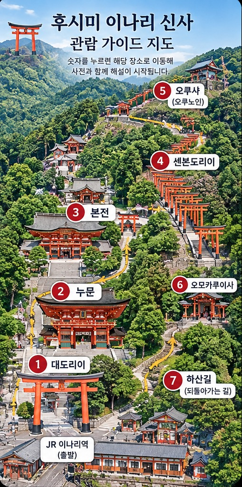

지도의 빨간 번호를 누르면 장소 사진과 역사 해설이 열립니다.
① 대도리이 → ② 누문 → ③ 본전 → ④ 센본도리이 → ⑤ 오쿠샤 → ⑥ 오모카루이시 → ⑦ 하산길
지도는 길 찾기용 일러스트입니다. 실제 이동 시 현장 표지판을 확인하세요.
① 대도리이 → ② 누문 → ③ 본전 → ④ 센본도리이 → ⑤ 오쿠샤 → ⑥ 오모카루이시 → ⑦ 하산길
지도는 길 찾기용 일러스트입니다. 실제 이동 시 현장 표지판을 확인하세요.
오프라인 이용을 준비하고 있습니다…